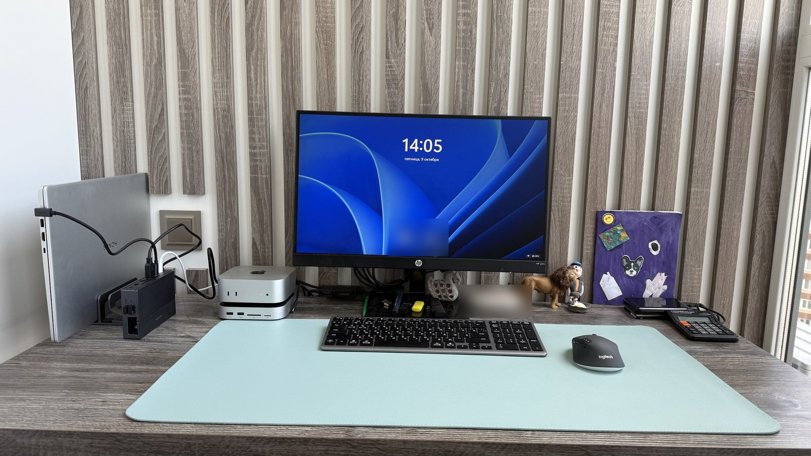
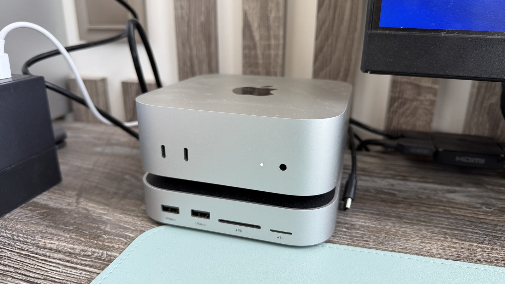
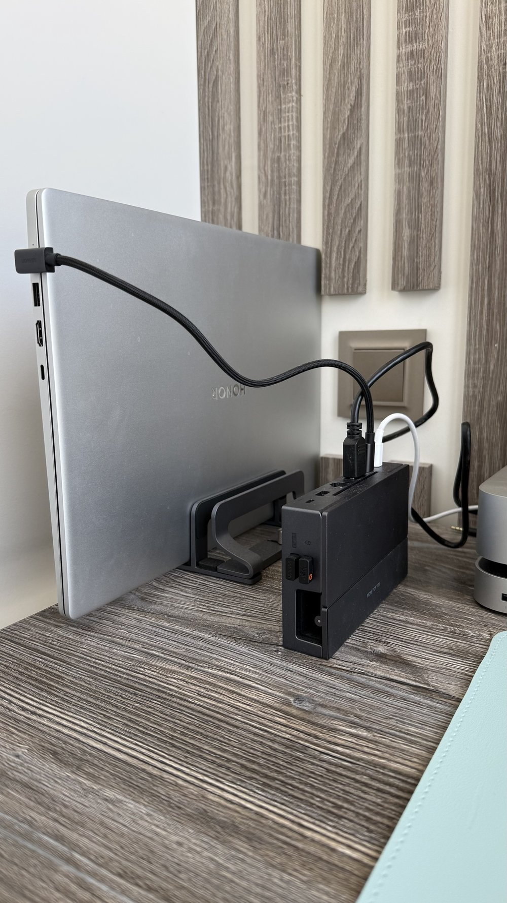
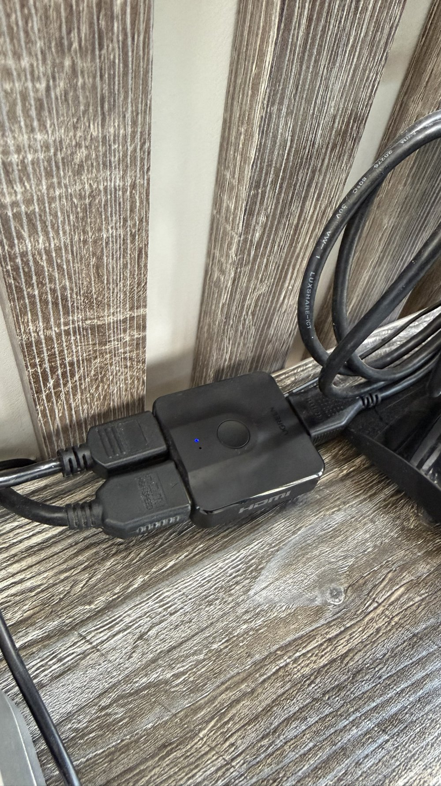

Когда я решил перейти на Mac mini, передо мной встал классический тупик любого взрослого человека: мак — это прекрасно, тихо и быстро, но рабочие задачи, привычки и специализированный софт намертво привязаны к Windows.
Городить на столе два монитора? Места нет, да и вертеть головой как на теннисном корте желания мало. Держать две клавиатуры и две мыши? Стол превратится в склад пластика.
В итоге я собрал схему «два компьютера на одном столе», которая работает бесшовно, стоит копейки и освободила кучу пространства. Показываю, как это устроено в реальности.
1. Сердце стола: Mac mini M4 и серебристый «бутерброд»
Сам Mac mini у меня базовый (16/256). Чтобы не плодить внешние коробки и провода, он стоит прямо на подставке-концентраторе Ugreen.

Визуально — цельный монолитный блок. Внутри подставки спрятан быстрый M.2 SSD на 2 ТБ. Туда отправляются тяжёлые файлы, медиатека и софт, не критичный для работы самой macOS. Машинка не выключается неделями, шума ноль, места занимает минимум.
2. Windows-контур: вертикальный ноут и неожиданный док
Второй участник сетапа — рабочий ноутбук Honor на Windows. Чтобы он не занимал полезную площадь стола, он отправлен на вертикальную стойку в закрытом виде.

За связь с внешним миром отвечает отдельная док-станция. Самое забавное, что изначально я покупал этот чёрный горизонтальный док под портативную консоль Steam Deck. Но в итоге консоль прекрасно живёт сама по себе, а док-станция идеально прижилась на столе: в неё заведено питание, проводная сеть и периферия, а к ноутбуку идёт всего один кабель Type-C.
3. Переключение за секунду: копеечный свитч вместо дорогого KVM
Как вывести две системы на один экран HP? Полноценные KVM-переключатели с поддержкой высоких разрешений стоят неприличных денег и регулярно чудят с потерей сигнала.
Я пошёл путём простой механики:
- Под нижней рамкой монитора на двусторонний скотч приклеен компактный двунаправленный HDMI-свитч Ugreen.
- В него заходят кабель от Mac mini и кабель от ноутбука, а на монитор уходит один провод.
- Нужно перейти с винды на мак? Палец под монитор, щелчок кнопкой — и через пару секунд на экране уже рабочий стол macOS.

4. Мышь и клавиатура: магия Multi-Device по воздуху
Чтобы не перетыкать провода, вся периферия выбрана с поддержкой нескольких устройств:
- Мышь (Logitech): на боковой грани аккуратная кнопка с тремя индикаторами. Нажал — мышка подключена к ноутбуку по радиоканалу через свисток в доке. Нажал ещё раз — она мгновенно подхватывается родным Bluetooth на Mac mini.
- Клавиатура: тонкая беспроводная доска. Комбинация клавиш переключает канал связи (Bluetooth/радио) и мгновенно меняет раскладку функциональных кнопок с Win на Mac (меняются местами Cmd и Opt).
В итоге рабочий стол абсолютно чистый: никаких висящих кабелей, только бирюзовый коврик, мышь и клавиатура.
5. Освобождённое место под столом и принтер на «удалёнке»
Раньше под столом на металлических опорах стоял огромный системный блок, путаясь под ногами и собирая пыль. После его продажи и перехода на Mac с вертикальным ноутом под столом стало абсолютно пусто и свободно — остались только аккуратно стянутые провода в кабель-канале.
А всю бумажную работу закрывает МФУ Pantum. Оно убрано на отдельную тумбу в углу комнаты и подключено исключительно по Wi-Fi. На печать можно отправить документ хоть с Mac mini, хоть со смартфона или рабочего ноутбука — тащить к нему USB-шнур через всю комнату не нужно.
Главная боль сетапа: почему теперь срочно нужно менять кресло
Железо работает как часы, но в любом рабочем месте есть элемент, о котором часто забывают, пока не заболит спина. Это стул.
Сейчас у меня стоит стандартное офисное кресло с сетчатой спинкой. И под весом крупного взрослого человека (под 100 кг) эта сетка превращается в пыточный инструмент:
- Поясничного упора фактически нет — сетка просто провисает гамаком.
- При попытке опереться спинка уходит далеко назад, корпус скрючивается, спина начинает ныть уже через пару часов работы.
- Добавьте сюда скрип механизма при каждом движении.
Вывод простой: собрать удобную связку из двух компов за небольшие деньги — задача решаемая за один вечер. А вот найти кресло, которое выдержит 100 кг и не убьёт позвоночник при многочасовой работе за монитором — это отдельный квест, которым я сейчас и займусь.